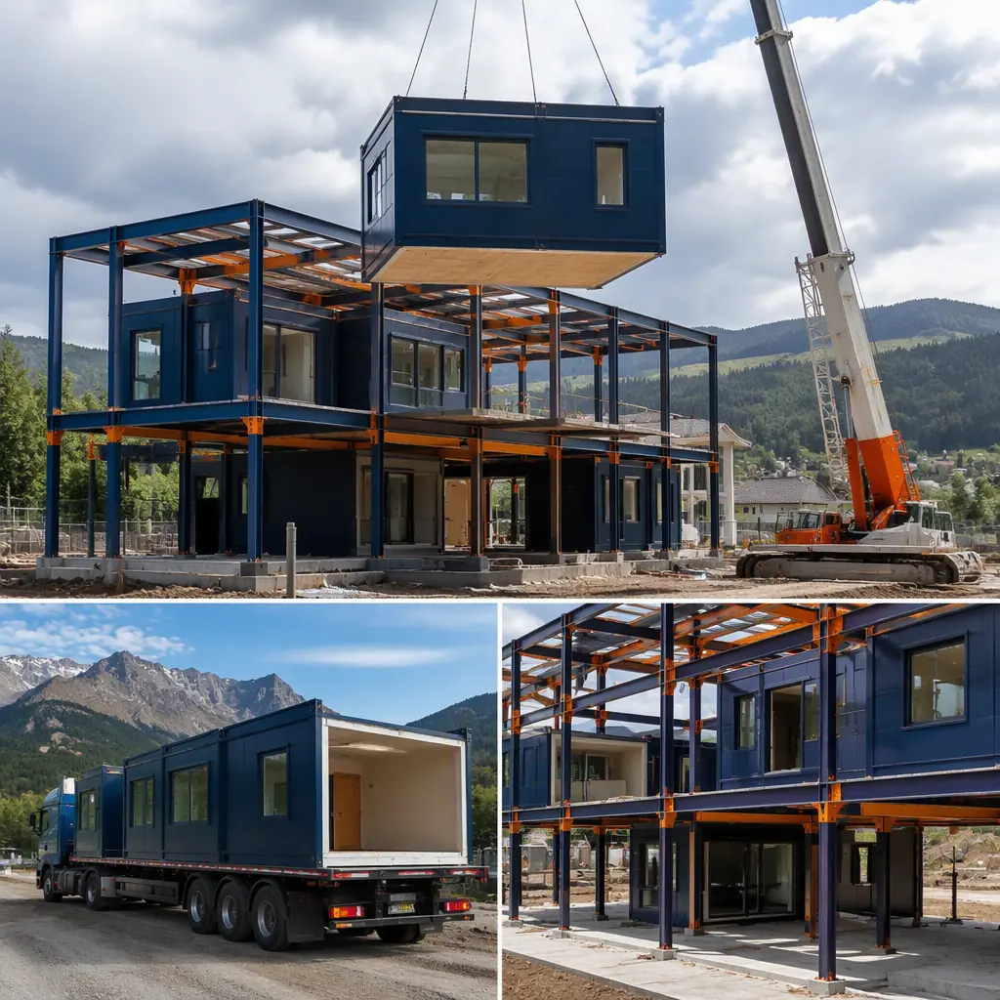
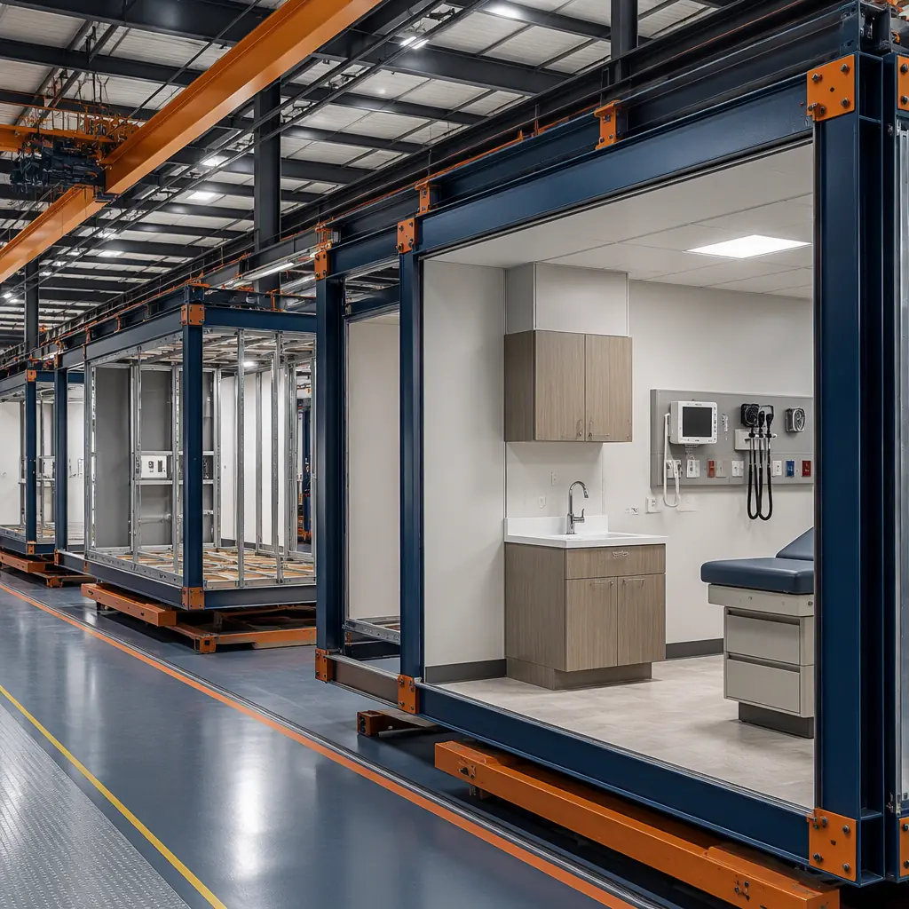
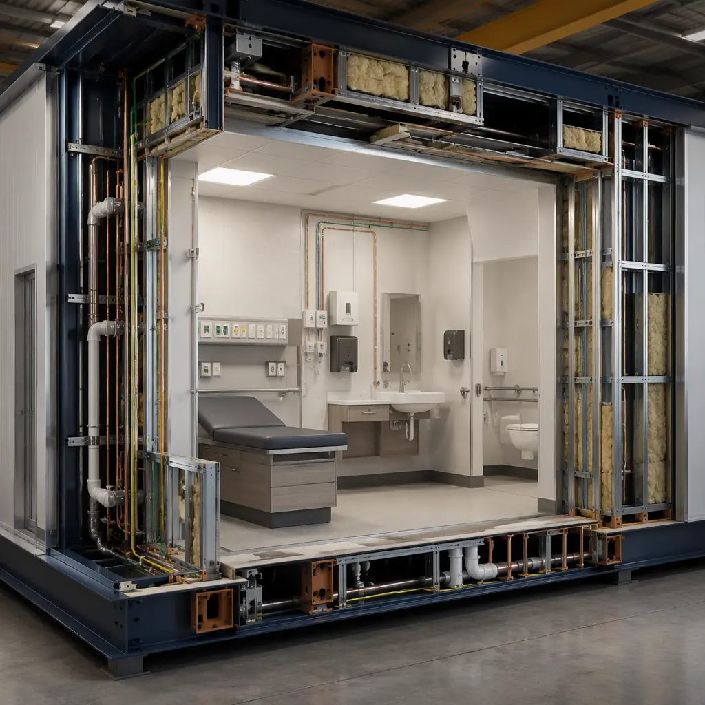

The United States has 1,400+ Federally Qualified Health Centers (FQHCs) operating 15,000+ service sites, serving 31.5 million patients annually — one in every eleven Americans. Yet demand consistently outstrips capacity: the average FQHC has a 14-day wait for a new patient appointment, and rural communities face provider shortages that leave counties with zero primary care access. Building new community health centers through traditional construction typically takes 24–36 months from funding approval to first patient. Modular construction cuts that to 10–14 months — a timeline that aligns with HRSA grant cycles and community urgency.

The FQHC Construction Challenge: Why Traditional Building Fails Community Health Timelines
Community health centers operate under constraints that make traditional construction particularly problematic. HRSA grants (Section 330 funding) come with strict timelines: funds must be obligated within specific periods, and construction delays can trigger repayment requirements. Meanwhile, the communities that need these centers most — rural towns, urban health professional shortage areas (HPSAs), tribal lands — often have the fewest local construction resources.
Three structural problems define the FQHC construction challenge:
1. Grant cycle misalignment. For a deeper look, our modular behavioral health & rehabilitatio… guide covers the details. A typical HRSA capital grant provides 18–24 months for project completion. A traditional construction project in a rural area with limited contractor availability routinely takes 30–36 months. The math doesn't work — and health centers that can't meet grant deadlines lose funding and start over. Modular delivery's 10–14 month timeline fits comfortably within grant periods.
2. Contractor deserts. For a deeper look, our modular gym construction — build fitnes… guide covers the details. 65% of HRSA-designated Health Professional Shortage Areas are rural, and those same areas often lack the commercial construction capacity to bid on a $3–8 million health center project. Modular construction solves this by centralizing production in a factory that can serve projects across wide geographic areas — the modules arrive on trucks, not dependent on local labor pools.
3. Phased capacity uncertainty. Community health centers often start with 8–12 exam rooms and need to grow to 20–30 as patient panels expand. Traditional construction locks in the building footprint on day one; modular construction enables phased expansion where additional exam room modules can be produced and connected to the existing facility with minimal disruption. For how modular design supports future growth, see our guide to modular building additions and expansions.

HRSA Compliance: Building to Federal Standards in a Factory
FQHC facilities must meet specific requirements that go beyond standard medical office construction. The Health Resources and Services Administration mandates accessible design, specific room sizes and configurations, infection control protocols, and documentation of compliance throughout construction. Modular delivery provides a compliance advantage that field construction cannot replicate.
Accessibility by design. For a deeper look, our modular indoor aquatic & community recrea… guide covers the details. FQHCs serve populations with higher-than-average disability rates, making ADA compliance non-negotiable. Factory construction ensures that every exam room door has the correct clear width (36 inches minimum), every restroom meets ADA turning radius requirements (60-inch diameter), and every reception counter has an accessible section at 34 inches maximum height. These details are verified at multiple QC gates in the factory, not caught (or missed) during a single site inspection.
Air quality and infection control. Community health centers see patients with infectious respiratory conditions alongside immunocompromised patients — making HVAC design a patient safety issue. Modular exam room modules can be pre-configured with the required air changes per hour (ACH) for clinical spaces (6 ACH minimum, 12 ACH for procedure rooms), with HEPA filtration where indicated. For facilities serving high-acuity populations, our comprehensive guide to modular healthcare construction details infection control strategies across building types.
Documentation for grant compliance. For a deeper look, our modular religious buildings & community c… guide covers the details. HRSA requires detailed construction documentation for capital grant recipients. Factory-based production generates inherently better documentation: every inspection, every material certification, every system test is logged as part of the manufacturing quality system. This documentation package can be submitted as part of grant closeout reporting, reducing the administrative burden on health center leadership.
Clinical Space Planning: What a Modular FQHC Contains
A typical 10,000–15,000 square foot community health center built modularly contains the following standardized modules:
- Reception and waiting module (1,200–1,500 sq ft): Open reception desk with HIPAA-compliant check-in windows, 20–30 seat waiting area, self-check-in kiosk stations, accessible restrooms. This module is typically the public face of the center and is designed for maximum natural light and clear wayfinding.
- Exam room wing (12–16 rooms, 1,800–2,400 sq ft): Standardized 120 sq ft exam rooms with integrated sink, exam table power/data, hand sanitizer dispensers, and wall-mounted diagnostic equipment panels. Each 4-room exam pod is produced as a single module for maximum factory efficiency.
- Provider workspace module (600–800 sq ft): Open-plan provider charting stations with sit-stand desks, dual monitors, and sound-attenuated partitions. Located adjacent to exam rooms for efficient clinical workflow.
- Lab draw and specimen processing (400–500 sq ft): Phlebotomy station with CLIA-waived lab testing capability, specimen refrigerator, biohazard waste handling. Pre-plumbed and pre-ventilated in factory.
- Behavioral health suite (600–800 sq ft): 3–4 consultation rooms with enhanced acoustic separation (STC 50+ walls) for confidential counseling sessions. Integrated telehealth equipment for remote psychiatry consults.
- Dental module (optional, 800–1,200 sq ft): 2–3 dental operatories with integrated compressed air, vacuum, and nitrous oxide plumbing — all pre-installed and tested in factory.
- Pharmacy module (optional, 500–700 sq ft): 340B-compliant pharmacy with secure drug storage, consultation window, and inventory management area.

Rural Deployment: Solving the Last-Mile Problem
Rural community health centers face a unique construction challenge: the 50-mile radius around the site may have no general contractor capable of building a medical facility. Modular construction solves this by treating the building as a transported product rather than a site-built structure. Modules are produced at MODURA's factory, transported via standard flatbed trucking, and craned onto prepared foundations by a specialist crew that travels with the modules. Site work is limited to foundation, utility stub-ups, and module interconnection — tasks that a local civil contractor can handle with remote engineering support.
For projects in remote or extreme-climate locations, our guide to modular extreme climate construction covers cold-weather and hot-climate considerations for module design and transport. For the logistics of module delivery to remote sites, see our modular construction transportation and logistics guide.
Cost Comparison: Modular vs. Traditional Community Health Centers
For a representative 12,000-square-foot FQHC with 14 exam rooms, behavioral health suite, lab, and pharmacy, the cost comparison breaks down as follows:
| Cost Element | Traditional | Modular | Delta |
|---|---|---|---|
| Hard construction cost | $3.8–$4.5M | $3.4–$4.0M | 10–12% savings |
| Site work and foundation | $450–$550K | $400–$480K | Similar (simpler foundation) |
| Design and engineering | $320–$400K | $280–$350K | Reduced site-design complexity |
| Construction-period financing | $180–$240K | $70–$100K | 60% reduction (shorter timeline) |
| Total project cost | $4.75–$5.7M | $4.15–$4.93M | 13–15% savings |
| Timeline (approval to occupancy) | 24–36 months | 10–14 months | 50–60% faster |
For a detailed per-square-foot cost breakdown applicable across all building types, see our 2026 modular construction cost per square foot guide.
Funding Sources: How FQHCs Pay for Modular Construction
Community health centers have access to funding mechanisms that make modular construction particularly attractive:
- HRSA Capital Development grants (Section 330): Competitive grants of $500K–$5M for construction, renovation, and expansion. Modular delivery's shorter timeline aligns with grant period requirements and reduces the risk of fund recapture.
- USDA Community Facilities Direct Loans: Low-interest (2.375% as of 2026) loans for essential community facilities in rural areas with populations under 20,000. Modular construction qualifies and the faster timeline reduces interest carry costs.
- New Markets Tax Credits (NMTC): 39% federal tax credit on Qualified Equity Investments in low-income communities. FQHC projects routinely qualify, and the modular timeline matches NMTC allocation periods.
- CDFI Fund programs: Community Development Financial Institutions provide flexible financing for health center construction. Our modular construction financing guide covers how to structure CDFI financing for modular projects.
For community health center directors, the most compelling number isn't the 15% cost savings — it's the 12 months of earlier patient access. In a county with 3,500 residents who currently drive 45 minutes for primary care, that's 3,500 people who get a doctor 12 months sooner.
Is Modular Right for Your Community Health Center?
Modular delivery is particularly well-suited to FQHC projects that meet these criteria:
- Standardized room program. Health centers with predominantly exam rooms, counseling offices, and basic lab/pharmacy space maximize modular efficiency.
- Rural or contractor-constrained location. If your project site is more than 50 miles from a metro area with commercial GC capacity, modular delivery solves the contractor availability problem.
- Grant-funded with timeline requirements. HRSA, USDA, and state-level grants with 18–24 month completion requirements are strong candidates for modular's 10–14 month delivery.
- Planned phased expansion. Centers that anticipate growing from 8 to 20+ exam rooms over 5 years benefit from modular's plug-and-play expansion capability.
- Multiple sites in a network. Health center networks planning 3+ facilities can achieve significant economies through standardized module designs produced in series.
Community health centers are among the most mission-critical buildings in American healthcare infrastructure. They serve populations that would otherwise rely on emergency departments for primary care, and every month of construction delay is a month of deferred access for patients who need it most. Modular construction aligns with the funding, timeline, and workforce realities of community health development in ways that traditional construction fundamentally cannot. For health center directors evaluating capital projects, modular delivery deserves a place at the top of the options list — not as an alternative method, but as the method most likely to deliver on time, on budget, and in service of the community.
Planning a community health center or FQHC facility? Contact our healthcare team for a modular feasibility assessment. We can review your space program and funding timeline and provide a modular delivery schedule and budget estimate within two weeks.